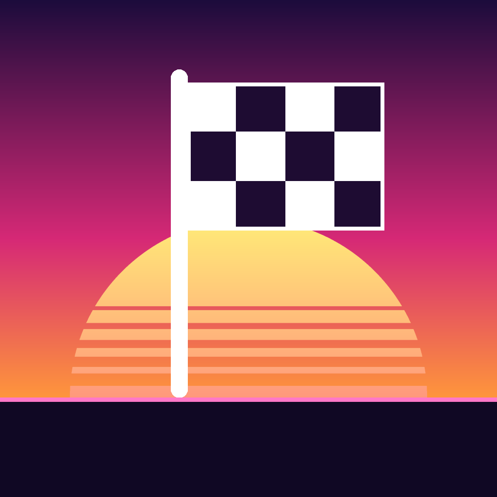

Checkpoint Clipped is a gaming short-video channel that posts clips of video game moments and streamer reactions. This page describes the small private tool the channel owner uses to publish the channel's videos.
The app runs on the channel owner's own computer. It cuts long videos into short vertical clips and uploads or schedules those clips on the owner's own YouTube channel. It only connects to the accounts of its owner; it is not offered to the public and has no other users.
Read how data is handled in the privacy policy and the terms of service.
Business, clipping and takedown inquiries: checkpointclipped@gmail.com
Fan channel. Not affiliated with or endorsed by any game publisher or streamer. Game names and trademarks belong to their owners.